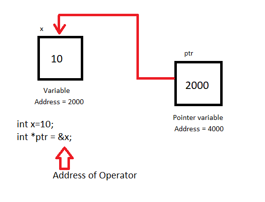
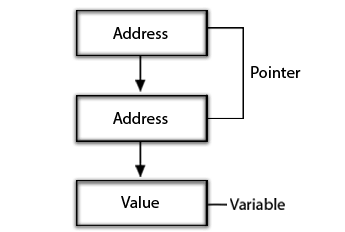

C Pointers
Pointers in C are easy and fun to learn. Some C programming tasks are performed more easily with pointers, and other tasks, such as dynamic memory allocation, cannot be performed without using pointers. So it becomes necessary to learn pointers to become a perfect C programmer. Let's start learning them in simple and easy steps.
As you know, every variable is a memory location and every memory location has its address defined which can be accessed using ampersand (&) operator, which denotes an address in memory.
Consider the following example, which will print the address of the variables defined:
#include <stdio.h>
int main(void)
{
int var1;
char var2[10];
printf("Address of var1 variable: %x\n", &var1 );
printf("Address of var2 variable: %x\n", &var2 );
return 0;
}
When the above code is compiled and executed, it produces the following result:
Address of var1 variable: bff5a400
Address of var2 variable: bff5a3f6
So you understood what is memory address and how to access it, so base of the concept is over. Now let us see what is a pointer.
What Are Pointers?

A pointer is a variable whose value is the address of another variable, i.e., direct address of the memory location. Like any variable or constant, you must declare a pointer before you can use it to store any variable address. The general form of a pointer variable declaration is:
type *var-name;
Here, type is the pointer's base type; it must be a valid C data type and var-name is the name of the pointer variable. The asterisk * you used to declare a pointer is the same asterisk that you use for multiplication. However, in this statement the asterisk is being used to designate a variable as a pointer. Following are the valid pointer declaration:
int *ip; /* pointer to an integer */
double *dp; /* pointer to a double */
float *fp; /* pointer to a float */
char *ch; /* pointer to a character */
The actual data type of the value of all pointers, whether integer, float, character, or otherwise, is the same, a long hexadecimal number that represents a memory address. The only difference between pointers of different data types is the data type of the variable or constant that the pointer points to.
How to use Pointers?
There are few important operations, which we will do with the help of pointers very frequently. (a) we define a pointer variable (b) the address of a variable to a pointer and (c) finally access the value at the address available in the pointer variable. This is done by using unary operator * that returns the value of the variable located at the address specified by its operand. Following example makes use of these operations:
#include <stdio.h>
int main(void)
{
int var = 20; /* actual variable declaration */
int *ip; /* pointer variable declaration */
ip = &var; /* store address of var in pointer variable*/
printf("Address of var variable: %x\n", &var );
/* address stored in pointer variable */
printf("Address stored in ip variable: %x\n", ip );
/* access the value using the pointer */
printf("Value of *ip variable: %d\n", *ip );
}
When the above code is compiled and executed, it produces result something as follows:
Address of var variable: bffd8b3c
Address stored in ip variable: bffd8b3c
Value of *ip variable: 20
Usage of pointer :
There are many applications of pointers in c language.
- Dynamic memory allocation
- Arrays, Functions, and Structures
In c language, we can dynamically allocate memory using malloc() and calloc() functions where the pointer is used.
Pointers in c language are widely used in arrays, functions, and structures. It reduces the code and improves the performance.
Advantage of pointer :
- Pointer reduces the code and improves the performance, it is used to retrieving strings, trees, etc. and used with arrays, structures, and functions.
- We can return multiple values from a function using the pointer.
- It makes you able to access any memory location in the computer's memory.
Pointer to array :
int arr[10];
int *p[10]=&arr; // Variable p of type pointer is pointing to the address of an integer array arr.
Pointer to a function :
void show (int);
void(*p)(int) = &display; // Pointer p is pointing to the address of a function
Pointer to structure :
struct st
{
int i;
float f;
}ref;
struct st *p = &ref;
NULL Pointers in C
It is always a good practice to assign a NULL value to a pointer variable in case you do not have exact address to be assigned. This is done at the time of variable declaration. A pointer that is assigned NULL is called a null pointer.
The NULL pointer is a constant with a value of zero defined in several standard libraries.
Consider the following program:
#include <stdio.h>
int main()
{
int *ptr = NULL;
printf("The value of ptr is : %x\n", &ptr );
return 0;
}
When the above code is compiled and executed, it produces the following result:
The value of ptr is 0
On most of the operating systems, programs are not permitted to access memory at address 0 because that memory is reserved by the operating system. However, the memory address 0 has special significance; it signals that the pointer is not intended to point to an accessible memory location. But by convention, if a pointer contains the null (zero) value, it is assumed to point to nothing.
To check for a null pointer you can use an if statement as follows:
if(ptr) /* succeeds if p is not null */
if(!ptr) /* succeeds if p is null */
Pointer arithmetic
As explained in main chapter, C pointer is an address, which is a numeric value. Therefore, you can perform arithmetic operations on a pointer just as you can a numeric value. There are four arithmetic operators that can be used on pointers: ++, --, +, and -
To understand pointer arithmetic, let us consider that ptr is an integer pointer which points to the address 1000. Assuming 32-bit integers, let us perform the following arithmetic operation on the pointer:
ptr++
Now, after the above operation, the ptr will point to the location 1004 because each time ptr is incremented, it will point to the next integer location which is 4 bytes next to the current location. This operation will move the pointer to next memory location without impacting actual value at the memory location. If ptr points to a character whose address is 1000, then above operation will point to the location 1001 because next character will beavailable at 1001.
Incrementing a Pointer
We prefer using a pointer in our program instead of an array because the variable pointer can be incremented, unlike the array name which cannot be incremented because it is a constant pointer. The following program increments the variable pointer to access each succeeding element of the array:
#include <stdio.h>
const int MAX = 3;
int main(void)
{
int var[] = {10, 100, 200};
int i, *ptr;
/* let us have array address in pointer */
ptr = var;
for ( i = 0; i < MAX; i++)
{
printf("Address of var[%d] = %x\n", i, ptr );
printf("Value of var[%d] = %d\n", i, *ptr );
/* move to the next location */
ptr++;
}
return 0;
}
When the above code is compiled and executed, it produces the following result:
Address of var[0] = bf882b30
Value of var[0] = 10
Address of var[1] = bf882b34
Value of var[1] = 100
Address of var[2] = bf882b38
Value of var[2] = 200
So you understood what is memory address and how to access it, so base of the concept is over. Now let us see what is a pointer.
Decrementing a Pointer
We prefer using a pointer in our program instead of an array because the variable pointer can be incremented, unlike the array name which cannot be incremented because it is a constant pointer. The following program increments the variable pointer to access each succeeding element of the array:
#include <stdio.h>
const int MAX = 3;
int main()
{
int var[] = {10, 100, 200};
int i, *ptr;
/* let us have array address in pointer */
ptr = &var[MAX-1];
for ( i = MAX; i > 0; i--)
{
printf("Address of var[%d] = %x\n", i, ptr );
printf("Value of var[%d] = %d\n", i, *ptr );
/* move to the previous location */
ptr--;
}
return 0;
}
When the above code is compiled and executed, it produces the following result:
Address of var[0] = bfdbcb20
Value of var[0] = 10
Address of var[1] = bfdbcb24
Value of var[1] = 100
Address of var[2] =bfdbcb28
Value of var[2] = 200
Array of pointers
Before we understand the concept of arrays of pointers, let us consider the following example, which makes use of an array of 3 integers:
#include <stdio.h>
const int MAX = 3;
int main()
{
int var[3] = {10, 100, 200};
int i,*ptr[3];;
for (i = 0; i < MAX; i++)
{
ptr[i] = &var[i];
}
for (i = 0; i < MAX; i++)
{
printf("Value of var[%d] = %d\n", i, *ptr[i] );
}
return 0;
}
When the above code is compiled and executed, it produces the following result:
Value of var[0] = 10
Value of var[1] = 100
Value of var[2] = 200
Pointer to Pointer
A pointer to a pointer is a form of multiple indirection, or a chain of pointers. Normally, a pointer contains the address of a variable. When we define a pointer to a pointer, the first pointer contains the address of the second pointer, which points to the location that contains the actual value as shown below.

A variable that is a pointer to a pointer must be declared as such. This is done by placing an additional asterisk in front of its name. For example, following is the declaration to declare a pointer to a pointer of type int:
int **var;
When a target value is indirectly pointed to by a pointer to a pointer, accessing that value requires that the asterisk operator be applied twice, as is shown below in the example:
#include <stdio.h>
int main()
{
int var;
int *ptr;
int **pptr;
var = 3000;
/* take the address of var */
int ptr = &<>var;;
/* take the address of ptr using address of operator & */
pptr = &<>ptr;
/* take the value using pptr */
printf("Value of var = %d\n", var );
printf("Value available at *ptr = %d\n", *ptr );
printf("Value available at **pptr = %d\n", **pptr);
return 0;
}
When the above code is compiled and executed, it produces the following result:
Value of var = 3000
Value available at *ptr = 3000
Value available at **pptr = 3000
Disadvantages of Pointers:
- Pointers are a bit difficult to understand.
- Pointers can cause several errors, such as segmentation errors or unrequired memory access.
- If a pointer has an incorrect value, it may corrupt the memory.
- Pointers may also cause memory leakage.
- The pointers are relatively slower than the variables.
Did you find this article helpful?